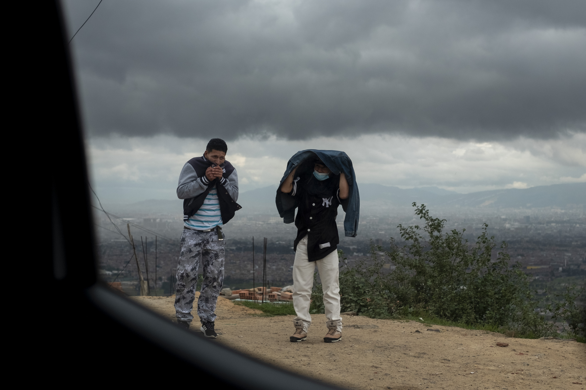

How an innovative transit system in Bogotá, Colombia is transforming a community on the margins.
In the Andean foothills above Bogotá, an amorphous city has taken shape for over five decades. Hundreds of thousands of people from Colombia’s rural interior have migrated to the steep canyons, where red-brick settlements sprawl upwards into the hills. Recently they’ve been joined by thousands of refugees from Venezuela.
In El Paraíso, one of the more recent of these settlements, nearly everything has been improvised: the sheet metal rooftops, the tangle of overhead electrical wires, the narrow alleys-turned-stairways at the sharpest inclines, the walkway over a foaming polluted creek. Heavily-loaded trucks and crowded buses struggle up the hairpin roads. Newer housing, appearing seemingly overnight, clings precariously at cliff's edge. Ground-floor shops blare reggaeton, lithe bodies cast long shadows across concrete football pitches filled with raucous shouts, and car drivers lean heavy on the horns.
Now, above this haphazard and energetic sprawl, is an incongruous sight: black and red gondola cabins effortlessly glide overhead like apparitions from an Alpine ski slope. This mass transit gondola system, the TransMiCable, may be the most important new addition to life in El Paraíso (‘The Paradise’). The four-station system, completed in 2018, has for the first time linked the mass of underserved hillside slums known as Ciudad Bolívar, of which El Paraíso is but one small part, to the sprawl of greater Bogotá miles away.
In the morning, hundreds from El Paraíso make their way inside Mirador del Paraíso, the topmost of the TransMiCable’s stations. There’s an air of calm and order as heavily bundled crowds are guided by uniformed station attendants into ten-person cabins. At work day’s end, they make their way back up.
Three years ago, this was not how residents of El Paraíso got in or out of their neighborhood. From El Paraíso, it would often take more than an hour to simply get to the plateau of Bogotá where economic opportunity was far greater than in the hills. Now it takes 15 minutes. It’s a project in social engineering, using mass transit to try to narrow the vast wealth divide in Colombia.
More commonly associated with chic ski resorts, gondola experiments are also being used in other megacities of Latin America, including La Paz, Bolivia and Rio de Janeiro, Brazil, to connect their more affluent city centers with their poorest outskirts.
In Bogotá, the 161 cabin TransMiCable system covers a distance of 3.4 kilometers from the city’s Transmilenio Bus Rapid Transit (BRT) terminal station of Portal del Tunal, at the base of Ciudad Bolívar, to the top of the mountain at Mirador del Paraíso station. The system is capable of transporting 7,000 passengers per hour.
Prior to the completion of TransMiCable in 2018, the few public transit options available in Ciudad Bolívar were large city buses or cramped minivans. Trips down the hills to Bogota proper took an hour or more, and passengers were often targets of stick-ups and snatch and grab thieves.
The TransMiCable is one step into a far more substantial journey into another world. From the gondola terminal, residents of Paraiso can now catch the city’s pioneering bus rapid transit system along Avenida Caracas, directly into the parts of Bogota where the money, and the jobs, are.
Avenida Caracas, with its dedicated Transmilenio bus lanes, runs nearly the entire south-north axis of Bogota. Along the 10-kilometer journey to the historic colonial center are blocks upon blocks of low-rise residential housing complexes that make up El Sur—a stop off for workers employed in its warehouses, light industrial facilities, and shopping malls.
Much of the vigilantly guarded Bogotá of wealth and privilege lies even further along Avenida Caracas nearly 20 kilometers (over 12 miles) north of Ciudad Bolívar. Here, towering condominiums clad in brick cast shadows over twentieth-century mansions now mostly converted into exclusive restaurants and cafés or headquarters of various foundations. The country’s leading banks, the embassies, glitzy shopping malls, and corporate headquarters make up the remaining built environment. It is here that many of the city's housekeepers, janitors, security guards, delivery drivers, and other low-paid service workers end the first half of their daily commutes.
A Divided Capital
Ady Beltrán sits at the window of a sweet-smelling bakery on El Paraíso’s frenetically busy main drag. Mirador del Paraíso station is a short but slightly breathless walk up a steep, crumbling side street. She takes in the typical street scene: a grinning young boy on the sidewalk straddles one of several street dogs; a pre-recorded voice announcing chorizo, pork sausage, for only 1,000 pesos (around 25 cents) crackles from a set of speakers attached to a mobile vending cart. Moments later, a revved up motorcycle dodges past a young family crowded onto the street by a clothing shop’s display of sidewalk mannequins.
“People think there are bodies lying in the street and flies buzzing around everywhere,” Beltrán says with a dry laugh. “But it’s an exaggeration.” By “people,” Beltrán is referring to some Colombians from outside of Ciudad Bolívar (and sometimes even within it) who continue to stigmatize the area and its inhabitants in spite of what she sees as the years of slow but steady progress in the area.
Like many longtime residents here, Beltrán, 36, can cite the benefits that investments like the TransMiCable have brought to El Paraíso and much of Ciudad Bolívar: reduced commute times, a sense of pride and dignity. There was also a burgeoning economic and tourism sector that, before the ravages of the pandemic, catered not only to Colombians who might have never dared venture here before, but also to curious visitors from as far away as France and Japan.
Although Beltrán has welcomed the softening of prejudices that has come with greater integration with the rest of Bogotá, she abstains from sugarcoating her community’s problems. “OK, so we don’t have bodies every night in the street,” she said, “ before citing a laundry list of problems that continue to plague the area: contamination of water resources, lack of proper sanitation, street gangs, drugs, youth delinquency and truancy.
Beltrán is a Costeña, a Colombian whose roots lie in the populous Caribbean coast hundreds of miles to the north of Andes-centered Bogotá, and roughly eight-thousand feet below. Not so long ago, her informal speech and mannerism would have cast her as an outsider in the capital. Bogotá, in spite of its cosmopolitan vibe, is considered, along with its surrounding rural departments, the heart of Colombia’s more traditional and socially rigid Andean culture.
Today, however, Beltrán is hardly an outlier, at least not in El Paraíso. Here, tall and slender Afro-Colombians with braided hair from the Pacific coast live alongside stocky mestizos from the nation’s vast eastern plains and various other ethnic and cultural communities in the geographically and socially fragmented country. Beltrán has adapted in other ways; her cheeks have taken on a slightly rosy, weathered tinge in the years she’s spent here, the effect of the strong sun and winds at this altitude.
In spite of their diverse cultural and geographic origins, most residents of Ciudad Bolívar share a common narrative: displacement.

A Great Migration
Maria Molina Gomez remembers the old creek of her youth, the same creek that now carves through the heart of Ciudad Bolívar. She remembers her mother and older sisters washing clothes in its cascading water while she played on its banks. Those were halcyon days. It was the early 80s. Then, this landscape of scrubby Andean highland, rich with spongy grassland and far from the present boundaries of Bogotá, was entirely rural.
It was the fresh water, sourced from the nearby mountains, that attracted the first familes of migrants like Gomez's. "We were like a village," Gomez recalls, "but with no water, no light, or anything." As the settlements were outside the existing administrative boundaries of Bogotá, sanitation and electricity services were completely absent. In addition, their homes were considered by the Colombian state to be unauthorized illegal invasiones, invasions.
It was these illegal settlements on the forgotten edge of Bogotá that would seed one of the largest population shifts in the country's history.
Yet Colombia’s rapid rural-urban migration over the last half century is hardly unique in the region. Latin America is the second most urbanized region in the world. Much of this urbanization consists of unplanned and unregulated informal settlements that have taken the form of improvised settlements--practically cities in their own right--- across much of the region’s growth-averse megacities, from La Paz and Rio de Janeiro to Mexico City and Lima.
These cities-within-cities are where the poor and the displaced, the Indigenous and the Black, and other marginalized groups are disproportionately concentrated. In Lima they are called pueblos jóvenes; in Rio de Janeiro, favelas; in Medellín, comunas; and in Bogotá, barrios populares. In the more sensitive language of urban planners and city governments, they are simply called "informal settlements."
In the mid twentieth-century, a brutal and unrelenting civil conflict, fueled largely by gross inequities of wealth and access to resources, would touch every corner of Colombia, and last for at least five decades (and continues in some parts of the country). Millions from the countryside fled to cities like Bogotá for safety and the prospect of work, creating many of the barrios populares seen today.
Most of the earliest settlements that now constitute the bulk of the urban zone of Ciudad Bolívar have been largely annexed, and therefore legalized, due to the extension of administrative boundaries over the decades. Yet newer invasiones like El Paraíso have not.
Molina Gomez lives in one of the older, lower elevated barrios of Ciudad Bolívar, Juan Pablo II. Hers is only a short walk from the neighborhood’s eponymous TransMiCable station. Juan Pablo II has become well-known for its murals and other street art by local young artists, much of it visible from inside the TransMiCable cabins.
By the 1980s, the population of Ciudad Bolívar had swelled to hundreds of thousands, and the dark days of drug wars and vigilante militarism turned much of Bogotá into an urban war zone. Molina Gomez can never forget the sight of dozens of bodies, those of the executed, left on the street. And she can never forget the times she cleaned blood stains from her doorstep. For more than two decades she watched as countless mostly young men were caught up in the zero-sum world of drugs and gang life. There are few remnants of her more idyllic childhood. Quebrada de Limas, the creek of her youth, is now a soggy mess of contaminated water and trash strewn banks.
By the 1990s, conditions in Bogotá were abysmal; its high crime rates made it one of the most dangerous cities in the world. Ciudad Bolívar was widely considered to be rife with the city’s worst elements.
In spite of a life fraught with the pain of her surroundings, at home Molina Gomez’s hospitality and mannerisms betray her country origins. As she fills cups with café con leche, she addresses her guests with “Su Merced,” a slightly servile expression akin to “Your Grace,” and common speech amongst older generations of Bogotanos and those from the surrounding Andean countryside.
On the open-roofed second story of her red-brick home, spikes of rebar top the brick demarcations of what will be an additional apartment. For now, it serves as a patio of potted herbs and houseplants. In the near distance, the TransMiCable’s cherry red-trimmed cabins glide by silently.
“The system has been a blessing for us,” Molina Gomez said.
But the approval and construction of the TransMiCable was a hard-won battle. In 2007, Ciudad Bolívar’s community veterans and leaders like Molina Gomez began pushing Bogotá’s government for an aerial gondola system, inspired by the success of Medellín’s (Colombia’s second city) MetroCable.
Inaugurated in 2004, the MetroCable in Medellín was one of the first of of the region's aerial gondola systems, and is arguably the most renowned. It was designed not only to serve one of the city’s most beseiged and notorious hillside slums, but also to merge seamlessly with the city’s decades-old elevated metro system, the only existing one in the country.
Despite Ciudad Bolívar’s community leaders citing Medellín’s example, it would take years of outreach, formal meetings, and feasibility studies, to convince a skeptical public and city administration unaccustomed to civic cooperation or grassroots solutions to urban mobility.
In the meantime, other Latin American cities would follow Medellín’s example.
Mexico City’s Mexicable system, built in 2016, is capable of transporting commuters from an impoverished industrial suburb a distance of three miles in only 17 minutes. In spite of its mobility benefits, the system has received a more lukewarm reception from some residents of the city’s impoverished outskirts. They have argued that the city should have invested in other equitable measures like access to water lines and reliable electricity.
Unlike other Latin American capitals, like Mexico City or Lima, Bogotá historically did not house a significantly large percentage of the country’s population. For this reason, the Colombian capital has had to play catch up with its infrastructure in radical ways to address the rapid rural-urban migration to its streets.
But it was these local conditions that would become a catalyst for arguably some of the most radical social and transit infrastructure developments in modern Latin American history.
Since the dawn of the 21st century, Bogotá has seen an impressive succession of ambitious mayors, each of whom has sought, in one way or another, to build their political brands and legacy through transit solutions.
The People
From morning to evening, the synthetic football field at Illimani Park fills with players of all ages and skill levels, surrounded by El Paraíso’s overbuilt citadels of housing. In El Paraíso there is perhaps no more crowning public investment besides the TransMiCable station than Illimani Park.
Florelia Guilombo is a temporary resident of El Paraíso and the proud mother of a son studying at one of Colombia’s public universities. She has adjusted to her fleeting reality here through her daily walks in the park. Guilombo’s permanent home is in Tunjuelito, a district whose southeastern border with Ciudad Bolívar follows the generous counters of its namesake river and its surrounding gradually urbanized wetland.
Guilombo moved “up the mountain” to El Paraíso in November 2020, and her plan is to stay in the neighborhood while her home in Tunjuelito undergoes structural upgrades. She takes the TransMiCable every day, and can’t imagine depending on the crowded city buses whose services preceded the aerial gondola by some years. She said that robberies are common on buses because of easier access. In the tight and camera-monitored confines of the TransMiCable’s cabins, on the other hand, she feels no such insecurities.
Guilombo knew very little about El Paraíso and its surrounding neighborhoods once too distant to pay any mind to. When she first arrived, she was stunned by the sheer number of people in this windy and distant place. Thousands, from all over the country, and increasingly, she noted, from Venezuela. She stops to watch a group of lithe young Venezuelans play a match of football in a newer, albeit smaller pitch than the other. “They don’t mix too much with Colombians,” she says flatly but without judgement. She pauses. “I feel for them,” she adds, “even if there are thieves and others among them who are taking advantage of our country.”
It is not always easy for Colombians to distinguish themselves from Venezuelans, or even to paint a clear narrative of their collective situation as refugees. Even as thousands have moved into every major and provincial city in Colombia since the country’s inflation crisis created one of the largest refugee populations in the world. And in Colombia, these refugees are entering a society already fractured by a more than half a century conflict that has created one of the world’s largest internally displaced population.
Some Venezuelans, by virtue of their education or dual Colombian citizenship, have managed to secure a decent livelihood in their adopted country. But most have fled to Colombia with little but the clothes on their back, ending up either in the streets or in under-resourced barrios like El Paraíso. Here, their narrative is blending with that of generations of Colombian migrants who came before them.
Mibzar sits on a scrubby, sloping, shaded patch of grass and stares at the conveyor of cabins gliding in and out of Mirador El Paraiso station and disappearing into the horizon of Bogota’s sprawl below.
Venezuelans like Mibzar, who lives with his mother and 11-year-old brother, came to El Paraiso at the end of 2020 after living in various provincial cities in Colombia over the last five years. He and his family moved here in part because of its relatively easy mobility and available undeveloped land. “It’s really cool,” he says of the TransMiCable as he rests his chin on a calloused hand.
For a teenage migrant like Mibzar, jobs and social connections are few and far between. He has no phone, and doesn’t use social media. Still, he’s managed to secure a few jobs collecting bricks for housing construction by hand and carrying sheets of tin roofing material on his back up and down the craggy hillsides where much of the newer, and most precarious construction is taking place.
Mizbar has only been on the system a few times, because, as he admits, he doesn’t really have anywhere to go. And at 2,300 Colombian pesos per trip, around 60 cents, taking the TransMiCable is expensive for him.
Laments about the cost of public transit in Bogotá are hardly limited to its poorest residents. “An average family can spend up to a third of their income on transportation,” said Luis Angel Guzmán, a Colombian urban planner and researcher at the University of the Andes in Bogotá. Compared to residents of the city’s wealthier north, where the majority of the higher wage earners live, poorer residents, those whose lower wage service jobs are depended on by the wealthy, often live the furthest distance from their jobs. Those who are paid the least in Bogotá spend the highest share of their income on transit.
In spite of the caveat of high ticket costs for low-income residents, Guzmán believes that Bogotá’s transit-based projects are an ideal start for helping to close the socioeconomic gaps in the city. “If we want a more inclusive city, if we want to close the gap between the rich city and the poor city,” he said, “we have to continue with these kinds of projects to improve the quality of life of the poorest people.”
Bogotá’s mayor, Claudia López, has expressed support for the construction of a second aerial gondola system in San Cristóbal, a district close to the city center but with a topographical and socioeconomic profile nearly identical to Ciudad Bolívar.
The TransMiCable’s champions, and there are many, note that it has helped soften the psychological divide as much as the physical divide between Bogotá’s two extremes: the wealthier north with its elegant brick-clad apartments, upscale shopping centers, and well-tended parks and tree-lined streets; and the poorer south, represented most starkly with the informal settlements of Ciudad Bolívar. . Yet for many Bogotanos, the city’s socioeconomic and cultural divide, felt most acutely in its poorer southern sprawl, are more entrenched than what even the most effective transit system can solve.
Christian Herrero is a slight and bespectacled young man from Ciudad Bolívar who works for Association Corazón Diverso, a foundation that works to diminish social discrimination towards Colombia’s most vulnerable and historically excluded groups, such as LGBTQ and racial minority communities. He and other youth leaders regular host their constituents in a compact auditorium at the base of Juan Pablo II station, the first station from Portal del Tunal. While Herrero says that the community appreciates the space and the sense of pride the TransMiCable system has instilled, he believes that the city needs to do more to invest in the social development of Ciudad Bolívar's most precious and vulnerable asset: the youth. Herrero said that the city has traditionally invested in punitive measures in response to social problems facing youth in Ciudad Bolivar. “A lot of times we think about more prisons,” he said, as he stood outside a small auditorium in the lower level of Juan Pablo II Station.
Drugs, gangs, and violence, Herrero said, continues to draw Ciudad Bolívar youth who have grown up trapped in a pervasive culture of poverty in spite of the area’s recent socioeconomic and cultural gains. To counter these pervasive negative influences, Herrero wants Bogotá’s government to invest more in Ciudad Bolívar by building more schools for general education and sports, as well as public spaces where youth can gather together safely and uplift the culture.
“The youth here love the culture of graffiti, dance, and sport,” he said. “But if there is a lack of investment that supports their interest, they will turn to more negative activities.”
While the city has constructed large public parks and libraries in other districts over the last two decades, very little large-scale public investment has trickled up into the hills of Ciudad Bolívar. Some of this is no doubt due to the constraints of geography and pre-existing infrastructure.
But whatever the challenges in his community, Herrero remains steadfast in his convictions to support other youth, who will in turn, support the overall development and progress of Ciudad Bolívar . “Educate the child and it will not be necessary to punish the man,” he says with a sly grin, quoting the words of the ancient Athenian philosopher Pythagoras.
Bogota's more affluent central and northern districts headquarter Colombia's premier banks, corporations, and educational and cultural institutions. Many menial services workers - cleaners, security guards, construction workers - on the other hand, live in the city's south. They often endure gruelingly long and uncomfortable commutes north in spite of improvements in transit.
“If we want a more inclusive city, if we want to close the gap between the rich city and the poor city, we have to continue with these kinds of projects to improve the quality of life of the poorest people.” --- Luis Angel Guzmán, Colombian urban planner and researcher.
Football is one of the few social equalizers in Colombia. In parks and plazas in Ciudad Bolívar, mostly young Colombian and Venezuelan men can be found playing the sport at all hours of the day. But outside of recreation, educational and employment opportunities for many youth in Ciudad Bolívar remain dire in spite of improvements in personal mobility.
In 2019, residents of Bogotá on average spent 191 hours in traffic, nearly 2 hours per day, according to global traffic index data. This made Bogotá the most congested city in the world, beating out even larger megacities like Mexico City, São Paulo, and Istanbul.
The TransMiCable is but one transit project of several that Bogotá has in the works. The city is currently constructing an above-ground metro, and also plans to revive a historic railway line.